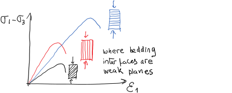

Next: 5.4 Determination of normal Up: 5. Stresses on Faults Previous: 5.2 Mapping of faults Contents
At the large scale, the Earth's crust is constituted by “already broken" rock layers.
These discontinuities are comprised mostly of faults.
The cementation or cohesive strength of faults is negligible because the rock is already broken at those interfaces.
Hence, a large block of rock does not have any cohesive strength or “unconfined compression strength”.
As a result, its shear strength depends only on frictional strength according to the Coulomb frictional criterion (Fig. 5.11).
You may think of “El Capitán” rock cliff (https://www.reviewjournal.com/wp-content/uploads/2018/06/10646363_web1_yosemite-fatal-fall_6053325.jpg) as an example of a rock mass, strong and continuous, but that is an exception, not the rule.
Furthermore, the size of “El Capitán” ( 900 m 3000 ft) is smaller than the size of sedimentary basins ( 100 km and bigger).
900 m 3000 ft) is smaller than the size of sedimentary basins ( 100 km and bigger).
Because of the lack of cohesive strength of the Earth's crust at the large scale, its shear strength just depends on frictional strength through the friction coefficient  (or equivalent friction parameter
(or equivalent friction parameter  ). The coefficient
). The coefficient  is the internal frictional angle of rock before rupture, while is the friction coefficient after initial rupture.
Hence, the shear strength of large blocks in the Earth's crust is simply
is the internal frictional angle of rock before rupture, while is the friction coefficient after initial rupture.
Hence, the shear strength of large blocks in the Earth's crust is simply
 |
(5.1) |
where
 |
(5.2) |
For typical friction coefficients the coefficient varies from 3 to 7. This means that the maximum ratio between maximum principal effective stress and minimum principal effective stress is
3 to 7 (See Table 5.1).
This ratio is usually called “(effective) stress anisotropy”.
The maximum allowable stress anisotropy in a geological formation depends on its shear strength. Faults form or reactivate when this stress anisotropy, and therefore shear strength, is surpassed.
 implies fault slip.
implies fault slip.
 implies no fault slip.
implies no fault slip.
A normal fault is caused by in-situ stress conditions in which
| (5.3) |
 .
These stress conditions are typical of tectonically passive and laterally extensional environments.
For example, the Permian Basin in Texas is mostly under normal faulting stress regime.
The fault plane is a shear rupture plane. Its orientation is (
.
These stress conditions are typical of tectonically passive and laterally extensional environments.
For example, the Permian Basin in Texas is mostly under normal faulting stress regime.
The fault plane is a shear rupture plane. Its orientation is (
 ) in vertical direction from the horizontal plane (the plane perpendicular to
) in vertical direction from the horizontal plane (the plane perpendicular to  ) to the plane of
) to the plane of  .
The blocks move along the direction of and do work against .
At any point in the fault, the block above the fault is called the “hanging-wall” and the block below is the “footwall” (Fig. 5.12).
.
The blocks move along the direction of and do work against .
At any point in the fault, the block above the fault is called the “hanging-wall” and the block below is the “footwall” (Fig. 5.12).
Normal faults usually occur in pairs.
Notice that the shear failure angle includes two possible solutions (for
 ). These are called conjugate solutions.
The block that moves down in between two normal conjugate faults is termed “graben”, while the ones that move up relative to the footwall are called “horst” (Fig. 5.13).
These geological structures occur frequently in hydrocarbon systems with structural fault traps.
). These are called conjugate solutions.
The block that moves down in between two normal conjugate faults is termed “graben”, while the ones that move up relative to the footwall are called “horst” (Fig. 5.13).
These geological structures occur frequently in hydrocarbon systems with structural fault traps.
A thrust fault is caused by in-situ stress conditions in which
 |
(5.4) |
These stress conditions are typical of locations with high compressive tectonic strains.
For example, sedimentary basins close to the Andes and Himalayas foothills are under reverse faulting regime.
The fault plane is a shear rupture plane.
Its orientation is
 in vertical direction from a vertical plane perpendicular to
in vertical direction from a vertical plane perpendicular to  to the plane of
to the plane of  (Fig. 5.14).
The blocks move along the direction of and do work against gravity (surface uplift).
As with normal faulting, the block above the fault is called the “hanging-wall” and the block below the “footwall”.
(Fig. 5.14).
The blocks move along the direction of and do work against gravity (surface uplift).
As with normal faulting, the block above the fault is called the “hanging-wall” and the block below the “footwall”.
A fault that may have been caused by paleo-stresses corresponding to a normal stress regime, but now moves according to in-situ stress conditions of a thrust fault stress environment is termed a reverse fault (Fig. 5.15).
A strike-slip fault is caused by in-situ stress conditions in which
 |
(5.5) |
These stress conditions are typical of high compressive tectonic strains mostly in one direction.
Some sedimentary basins around the Rocky Mountains and near California are under strike slip regime.
The fault plane is a shear rupture plane and it is vertical. Its orientation is
in horizontal direction from a vertical plane perpendicular to towards a plane perpendicular to .
The schematic in Fig. 5.16 shows an oblique fault, not a pure strike-slip fault.
The fault is called strike-slip, because it slips in horizontal direction, in the direction of the fault strike.
Notice that oblique faults move with a combination of vertical and horizontal displacements.
The type of fault that occurs for each stress combination gives rise to the name of the stress faulting regime (Table 5.2). Notice that stresses may change in magnitude and direction with time at a given location (see stress map in Fig. 5.17 - other maps available at http://www.world-stress-map.org/). Furthermore, the same location may evolve through different stress regimes over geological periods of time. The stress regime can also change with depth at the same location. Changes of stress regime with depth are critical for defining the geometry of fluid-driven fractures.
 |
The ideal orientation of a hydraulic fracture is a plane perpendicular to the minimum principal stress  direction.
Similarly, we can also tell what would be the orientation of ideal conjugate pairs of shear fractures (faults) for a given state of stress.
The dip and strike will depend on
direction.
Similarly, we can also tell what would be the orientation of ideal conjugate pairs of shear fractures (faults) for a given state of stress.
The dip and strike will depend on  , , and the friction angle
, , and the friction angle  (Fig. 5.19).
Such ideal conjugate pair of shear fractures would be located:
(Fig. 5.19).
Such ideal conjugate pair of shear fractures would be located:
and ,
 ,
from the plane perpendicular to towards the plane perpendicular to .
,
from the plane perpendicular to towards the plane perpendicular to .
![\includegraphics[scale=0.50]{.././Figures/split/6-IdealFaultOrientationGC.pdf}](img637.svg) |
Notice that all these angles vary according to the stress regime. Faults formed in NF stress regime tend to be steep. Faults formed in RF stress regime are not too steep. Faults formed in SS stress regime are vertical.
 |
PROBLEM 5.1: Find the ideal orientation of a hydraulic fracture and faults (shear fractures) at a location subjected to the following state of stress and conditions:
is a principal stress
is N60 W
= 30.
W
= 30.
SOLUTION
First, recognize the planes of and and their orientations with respect to the geographical coordinate system.
The plane of in this case is a horizontal plane ( plane, a principal stress) and the plane of is a vertical plane perpendicular to .
![\includegraphics[scale=0.75]{.././Figures/split/6-IdealFracP1.pdf}](img638.svg)
A hydraulic fracture would be perpendicular to , in this case . Hence, the strike is
 and the dip is
and the dip is
 because is horizontal.
because is horizontal.
The dip of faults depends on the friction angle. In this case, the failure angle is:
 going from the plane of to the plane of .
Thus, the strike of the two possible faults is
going from the plane of to the plane of .
Thus, the strike of the two possible faults is
 and the dips are
and the dips are
 SE and
NW.
SE and
NW.

PROBLEM 5.2: Find the ideal orientation of a hydraulic fracture and faults (shear fractures) at a location subjected to the following state of stress and conditions:
is a principal stress
is 010
= 40.
SOLUTION
First, recognize the planes of and and their orientations with respect to the geographical coordinate system.
The plane of in this case is a vertical plane ( plane) and the plane of is another vertical plane perpendicular to .
![\includegraphics[scale=0.75]{.././Figures/split/6-IdealFracP2.pdf}](img644.svg)
A hydraulic fracture would be perpendicular to , in this case . Hence, the strike is
 and the dip is
because is horizontal.
and the dip is
because is horizontal.
The dip of faults depends on the friction angle. In this case, the failure angle is:
 going from the plane of to the plane of .
Thus, the strikes of the two possible faults are
going from the plane of to the plane of .
Thus, the strikes of the two possible faults are
 and
and
 , the dip is
, the dip is
 .
.
![\includegraphics[scale=0.65]{.././Figures/split/6-20.pdf}](img614.svg)


![\includegraphics[scale=0.50]{.././Figures/split/6-12.pdf}](img626.svg)
![\includegraphics[scale=0.55]{.././Figures/split/6-13.pdf}](img628.svg)
![\includegraphics[scale=0.55]{.././Figures/split/6-14.pdf}](img632.svg)
![\includegraphics[scale=0.55]{.././Figures/split/6-15.pdf}](img633.svg)
![\includegraphics[scale=0.65]{.././Figures/split/6-16.pdf}](img635.svg)
{kind=link}